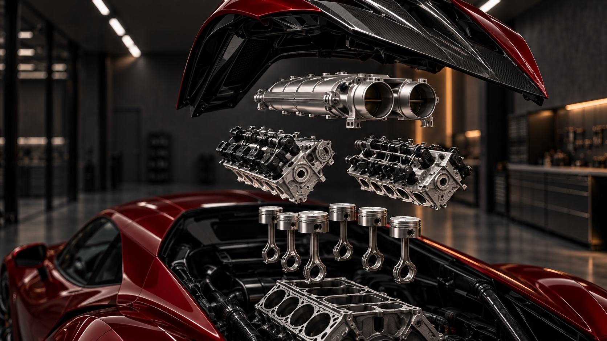
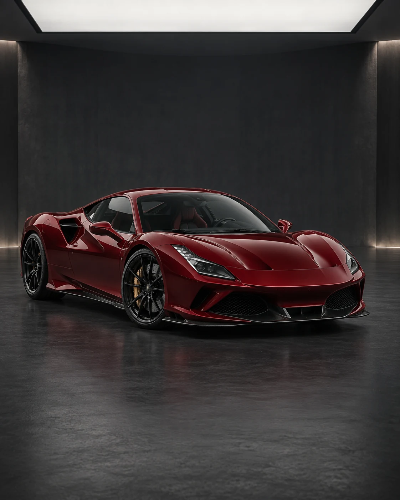

NOCTIS / DIRECTION DU FILM ATELIEREntrer dans
la précision.
Deux keyframes prêtes pour Seedance 2.5, un prompt et le calage prévu des textes. Le film livré est maintenant intégré au site, avec les textes et les repères moteur synchronisés.
Le film validé
10 secondes · Version web du ProRes HDR fourni · Vidéo 2 installée sur le site.
Les deux keyframes
Le zoom moteur et ses repères
Aperçu de direction sur une image fixe. Dans le film, la caméra se rapproche de l’admission puis descend vers les culasses et les pistons. Cet aperçu de préparation reste une image fixe ; les repères du site sont désormais calés sur le film livré.

ADMISSION · Le souffle
Réglages — hors du prompt
| Modèle / mode | Seedance 2.5 / Keyframe |
| Durée | 10 secondes |
| Format d’image | 16:9 — 1080p (1920 × 1080) |
| Fichier / audio | MP4 / audio désactivé |
Prompt corrigé — caméra rythmée, carrosserie intacte
On conserve l’atelier, la voiture et le moteur éclaté. La protection est déjà posée : aucun voile ni pellicule à animer. Les déplacements rapides relient les détails ; les ralentissements servent leur lecture.
Prompt à copier
Create a premium automotive film using the supplied start and end keyframes. Preserve the exact oxblood-red supercar, its wheels, proportions and the charcoal workshop.
The car is already finished and protected. Its paint and body panels stay solid and unchanged. Only the rear engine cover and the engine components shown in the final keyframe separate.
Use one continuous cinematic camera move with strong changes of pace: fast travel between details, smooth braking into slow close-ups, then acceleration again. The car remains parked.
Begin with a fast low dolly through the workshop entrance toward the front-left fender. Brake into a slow close pass over the glossy red paint. Crisp ceiling-light reflections slide across the rigid, already-finished surface.
Accelerate along the left flank, then slow into a brief macro view of the woven carbon detail. Rack focus toward the rear engine bay. Sweep upward in a fast rear-left orbit, decelerating as the engine cover lifts as one rigid panel.
The intake, cylinder heads, pistons and connecting rods separate once into the compact, precisely aligned exploded arrangement shown in the end keyframe. Their movement is controlled and mechanical. Once separated, the parts stay suspended and motionless.
Push briskly toward the engine, braking into a sharp close-up of the intake. Slowly slide the camera downward past the cylinder heads to the pistons and connecting rods. Keep each group distinct and readable. Leave dark space on the left for labels added later.
Pull back decisively, then ease smoothly into the exact final keyframe. Hold the complete exploded assembly still at the end.
Photoreal luxury automotive CGI. Deep red lacquer, crisp carbon fibre, machined aluminium, charcoal shadows and restrained amber lighting. Controlled directional motion blur during fast camera moves; sharp details during slow inspection.
No fabric, veils, sheets, floating membranes, peeling paint or animated protective layers. No body morphing, extra parts, smoke, people, text, logos or interface graphics. No cuts or fade to black.
Les textes au scroll
Calés sur le film livré : peinture, carbone, mécanique, puis trois repères moteur suivis pendant les gros plans. Retour au plan large sans texte, avant la signature finale.
| 0–0.75 s | Entrez. Dans l’atelier. |
| 0.75–2.1 s | Révéler la profondeur. |
| 2.2–3.6 s | La matière. Le caractère. |
| 4.05–5.7 s | La précision. De l’intérieur. |
| 6.1–6.9 s | ADMISSION — Le souffle |
| 6.9–7.7 s | CULASSES — La précision |
| 7.7–8.55 s | PISTONS & BIELLES — Le mouvement |
| 9.65–10 s | NOCTIS — Chaque détail, choisi avec intention |
Référence du véhicule
Référence d’identité déjà utilisée pour générer les keyframes. Les deux PNG suffisent pour le mode Keyframe.
